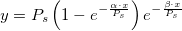

PIPlatt2-FitFunc

プラットの光阻害照度曲線 対 光合成のモデル
数: 3
Names: Ps, alpha, beta
Meanings: Ps = scaling parameter, alpha = photosynthetic capacity, beta = negative slope
Lower Bounds: Ps > 0, alpha > 0, beta 0
上側境界: なし
nlf_PIPlatt2(x,Ps,alpha,beta)
PIPlatt2.FDF
Exponential